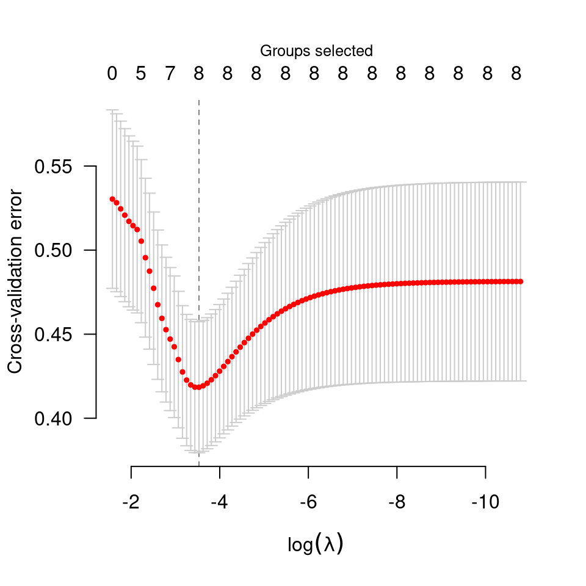
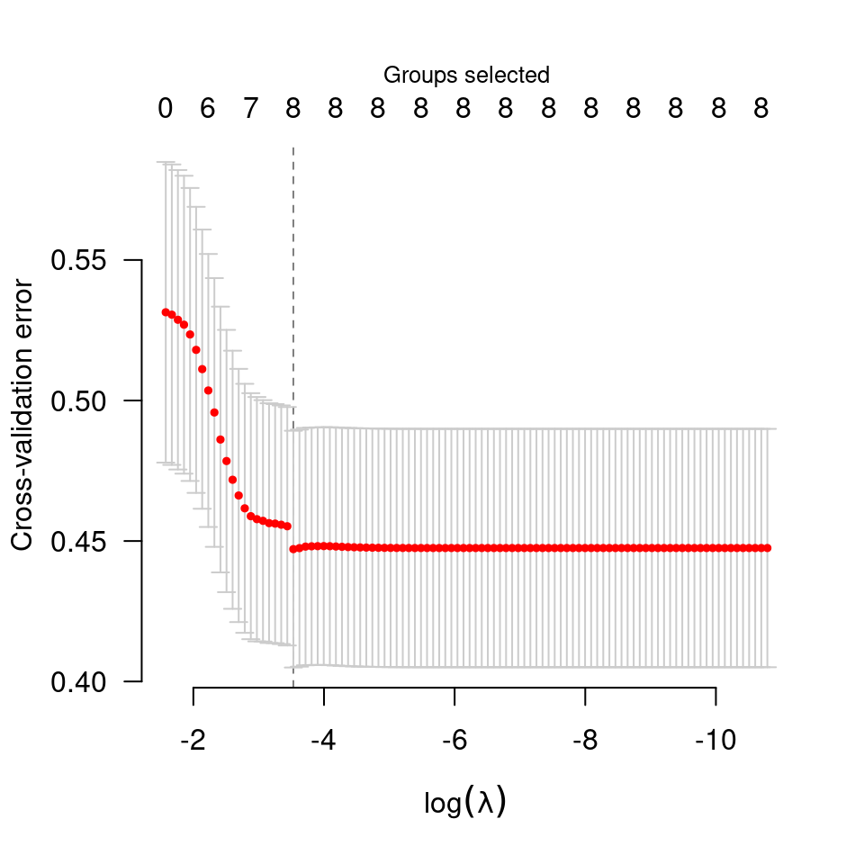

cv-grpreg.RdPerforms k-fold cross validation for penalized regression models with grouped covariates over a grid of values for the regularization parameter lambda.
The design matrix, as in grpreg/grpsurv.
The response vector (or matrix), as in
grpreggrpsurv.
The grouping vector, as in grpreggrpsurv.
Additional arguments to grpreggrpsurv.
The number of cross-validation folds. Default is 10.
You may set the seed of the random number generator in order to obtain reproducible results.
Which fold each observation belongs to. By default the observations are randomly assigned.
Should cv.grpreggrpsurv return the fitted
values from the cross-validation folds? Default is FALSE; if TRUE,
this will return a matrix in which the element for row i, column j
is the fitted value for observation i from the fold in which
observation i was excluded from the fit, at the jth value of
lambda. NOTE: For cv.grpsurv, the rows of Y are
ordered by time on study, and therefore will not correspond to the
original order of observations pased to cv.grpsurv.
If set to TRUE, cv.grpreg will inform the user of its progress by announcing the beginning of each CV fold. Default is FALSE.
For cv.grpsurv, the method by which the
cross-valiation standard error (CVSE) is calculated. The 'quick'
approach is based on a rough approximation, but can be calculated
more or less instantly. The 'bootstrap' approach is more accurate,
but requires additional computing time.
The function calls grpreg/cv.grpsurv nfolds
times, each time leaving out 1/nfolds of the data. The
cross-validation error is based on the deviance;
see
here for more details.
For Gaussian and Poisson responses, the folds are chosen according to
simple random sampling. For binomial responses, the numbers for each
outcome class are balanced across the folds; i.e., the number of
outcomes in which y is equal to 1 is the same for each fold, or
possibly off by 1 if the numbers do not divide evenly. This approach
is used for Cox regression as well to balance the amount of censoring
cross each fold.
For Cox models, cv.grpsurv uses the approach of calculating
the full Cox partial likelihood using the cross-validated set of
linear predictors. Other approaches to cross-validation for the Cox
regression model have been proposed in the literature; the strengths
and weaknesses of the various methods for penalized regression in the
Cox model are the subject of current research. A simple approximation
to the standard error is provided, although an option to bootstrap the
standard error (se='bootstrap') is also available.
As in grpreg, seemingly unrelated regressions/multitask
learning can be carried out by setting y to be a matrix, in
which case groups are set up automatically (see grpreg
for details), and cross-validation is carried out with respect to rows
of y. As mentioned in the details there, it is recommended to
standardize the responses prior to fitting.
An object with S3 class "cv.grpreg" containing:
The error for each value of lambda, averaged
across the cross-validation folds.
The estimated standard error associated with each value
of for cve.
The sequence of regularization parameter values along which the cross-validation error was calculated.
The fitted grpreg object for the whole data.
The fold assignments for cross-validation for each
observation; note that for cv.grpsurv, these are in terms
of the ordered observations, not the original observations.
The index of lambda corresponding to
lambda.min.
The value of lambda with the minimum
cross-validation error.
The deviance for the intercept-only model.
If family="binomial", the cross-validation
prediction error for each value of lambda.
data(Birthwt)
X <- Birthwt$X
y <- Birthwt$bwt
group <- Birthwt$group
cvfit <- cv.grpreg(X, y, group)
plot(cvfit)

summary(cvfit)
#> grLasso-penalized linear regression with n=189, p=16
#> At minimum cross-validation error (lambda=0.0293):
#> -------------------------------------------------
#> Nonzero coefficients: 16
#> Nonzero groups: 8
#> Cross-validation error of 0.42
#> Maximum R-squared: 0.21
#> Maximum signal-to-noise ratio: 0.26
#> Scale estimate (sigma) at lambda.min: 0.647
coef(cvfit) ## Beta at minimum CVE
#> (Intercept) age1 age2 age3 lwt1 lwt2
#> 3.036968099 0.119759128 1.011556096 0.610171600 1.188502278 -0.130642141
#> lwt3 white black smoke ptl1 ptl2m
#> 0.900248118 0.232356288 -0.092980525 -0.228955320 -0.228389905 0.112793886
#> ht ui ftv1 ftv2 ftv3m
#> -0.405349938 -0.418773600 0.023016734 0.008722009 -0.029581600
cvfit <- cv.grpreg(X, y, group, penalty="gel")
plot(cvfit)

summary(cvfit)
#> gel-penalized linear regression with n=189, p=16
#> At minimum cross-validation error (lambda=0.0293):
#> -------------------------------------------------
#> Nonzero coefficients: 13
#> Nonzero groups: 8
#> Cross-validation error of 0.45
#> Maximum R-squared: 0.15
#> Maximum signal-to-noise ratio: 0.18
#> Scale estimate (sigma) at lambda.min: 0.669